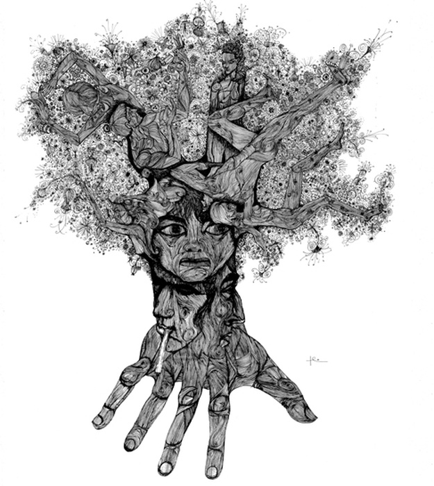
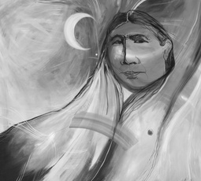
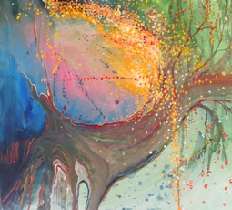
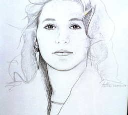

Paintings
With 4 years of art school in Munich and a lifetime of experience creating, I have produced captivating paintings and drawings, using acrylics, pen and ink, and watercolor.




With 4 years of art school in Munich and a lifetime of experience creating, I have produced captivating paintings and drawings, using acrylics, pen and ink, and watercolor.
I was born in Czechoslovakia, when the sun was in Libra, the moon in Leo, and Cancer on the horizon. I have lived a life full of joy and love, but also tragedy and hardship. I wish to leave art as my legacy, and share the beauty I see in the world around me. The human spirit is amazing, this is a fact I will always cherish.
The art in photography is in capturing the moment of wonder and emotion. I specialize in nature and portrait photography.
Please email me to inquire about purchasing or commissioning a painting or print.
email: irmelin@comcast.net